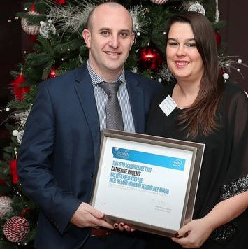
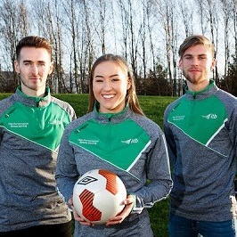

Events
- ITB Student receives Intel Women in Technology Award 12/12/2018 16:31:45. ITB student Catharine Phoenix was recently presented with an Intel Women in Technology Award at a special ceremony held on November 20th 2018 in Dublin's Morisson Hotel.
- ITB Students receive Intel Engineering Design Student of the Year Award 2018 12/12/2018 16:22:33. A special event was held in ITB on Friday 7th December to mark the achievement of ITB mechatronic engineering students Roy Mercer and Raymond Matthews on being joint winners of the INTEL sponsored Engineering Design Student of the Year Award 2018.
- Sports Scholarships presented to 22 ITB students 10/12/2018 10:03:23. On Friday December 7th, ITB awarded its annual Sports Scholarships to students who have demonstrated outstanding sporting ability. A total of 22 scholarships were awarded to participants in Rugby, Basketball, Soccer, Badminton, Pool, Karate, Taekwon-do and Kick Boxing, with packages totalling 25,000 euros
- Sporting Prowess Programme now open for Applications 28/11/2018 12:05:09. Applications are now open for the 2019 ITB Sporting Prowess Programme. This programme is aimed at prospective students who display outstanding sporting ability at national or regional level, and offers an opportunity to participate on our Sports Management & Coaching Courses on a reduced points basis. Up to 10% of available places are reserved for such students.



